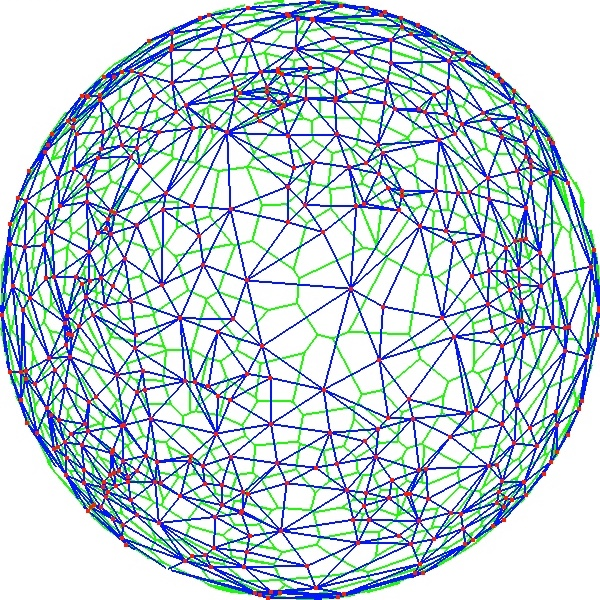
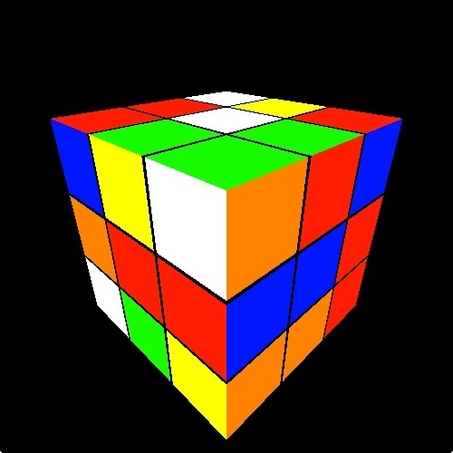

I am a Homo sapien who loves to play chess, longboard, and code.
I decided to create this webpage to showcase my personal projects.
I hope to explain projects and why I decided to
do them. They have tickled my interests and taught me
so much about computer science, mathematics, and physics. Perhaps
they can interest you to explore these topics as they did for me. :)

In computer graphics, fluid is used to describe systems like fire, smoke, and dust.
It is notoriously hard to simulate fluid in real-time, so particle systems are usually used
to approximate them. However, non-particle based fluid simulations can make fluid
effects more realistic and visually interesting. I have decided to create a real-time fluid simulation
using fast algorithms based on the
Navier-Stokes equations
accelerated by the GPU with
OpenCL
. From this project I have learned about fluid dynamics, the architecture of the GPU,
how to manage memory efficiently with OpenCL, and the interoperability between OpenGL and OpenCL.

For a given set of points, called sites, a
Voronoi diagram
is usually defined to be a partition of the plane such that the set of all points within each region
are closer to their corresponding site than any other. Its dual, the
Delaunay triangulation,
asserts that there are no sites inside the circumcircle of any triangle.
Both of these are very useful for nearest neighbor queries and generating
nice triangulations. There is no reason they must be restriced to the plane
and so my program makes Voronoi diagrams from a set of sites on the unit sphere.
Since speed was a major goal, I used a modified version of
Fortune's algorithm
to generate a Voronoi diagram from thousands of sites in a fraction of a second.
I have learned about the annoyances of floating-point error and have optimized my code
through multithreading.

The Rubik's cube has always fascinated me. Finding optimal solutions
(20 moves or fewer)
can consume a lot of time and memory. Most algorithms find suboptimal
solution very quickly using about 30-40 moves. My program uses
Thistlethwaite's algorithm
to solve any cube using about 35 moves in about 15 milliseconds with
43 MB of pregenerated table data. From this project, I have explored group theory,
combinatorics, and graph traversal algorithms.